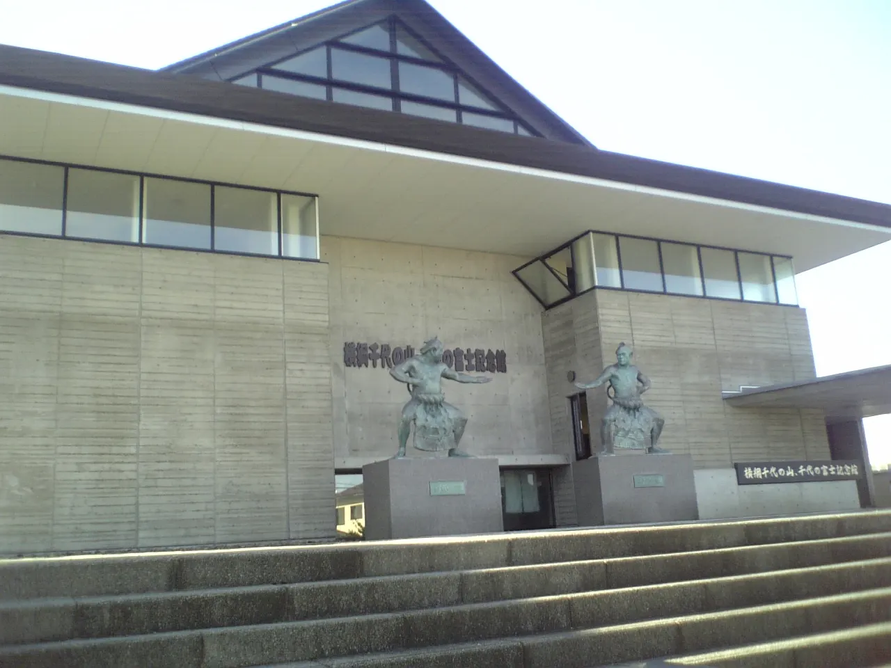
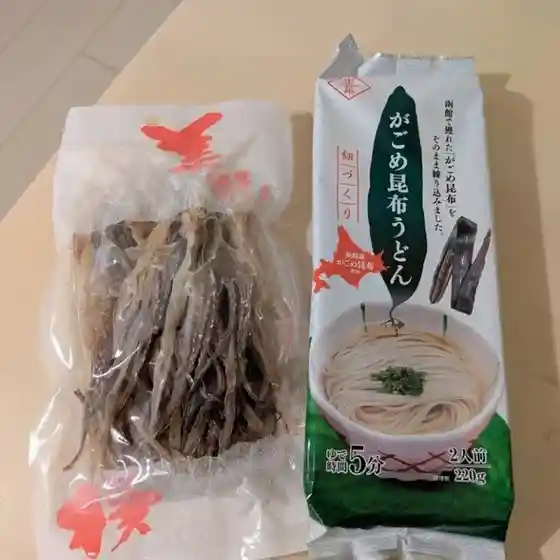
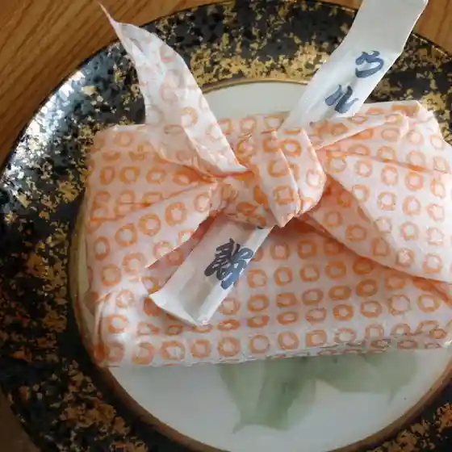
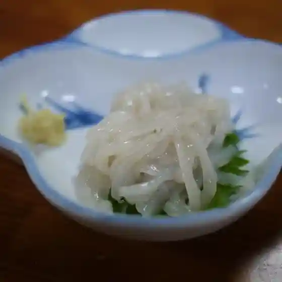
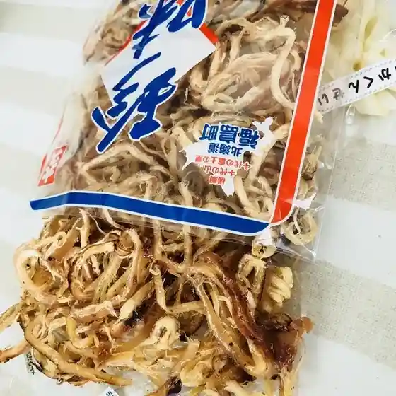
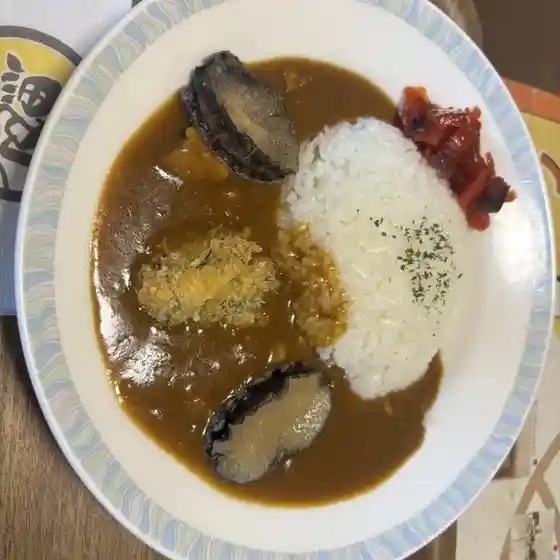

Japan / Hokkaido / Fukushimacho
Fukushimacho
Fukushimacho · Hokkaido
Fukushimacho
Highlighted on the Hokkaido map.

Stay
Dining
ときわ旅館

Tokiwa Ryokan
道の駅 横綱の里ふくしま

Michi No Eki Yokozuna No Sato Fukushima
成屋菓子舗

Sei Ya Kashi Ho
たかお

Takao
ダイキュウ吉田商店

Daikyuu Yoshida Shouten
居酒屋留

Izakaya Ryuu
ささ井

Sasa I
LAWSON 松前福島町三岳店

Lawson Matsumae Fukushima Machi Mitake Mise
セラーズ やまた店
Seraazu Yamata Mise
惣菜かじや
Souzai Kajiya
セイコーマート 福島店
Seikoomaato Fukushima Mise
喫茶タイム
Kissa Taimu
カラオケ酒場 笑び家
Karaoke Sakaba Warai Bi Ie
番屋
Banya
コープさっぽろ ふくしま店
Koopu Sapporo Fukushima Mise
清ちゃん
Kiyoshi Chan
桜樹
Sakuragi
青函トンネル記念館
Seikan Tonneru Kinenkan
千軒そば屋
Sen Ken Soba Ya
たつや菓子店
Tatsuya Kashi Mise
鶴
Tsuru